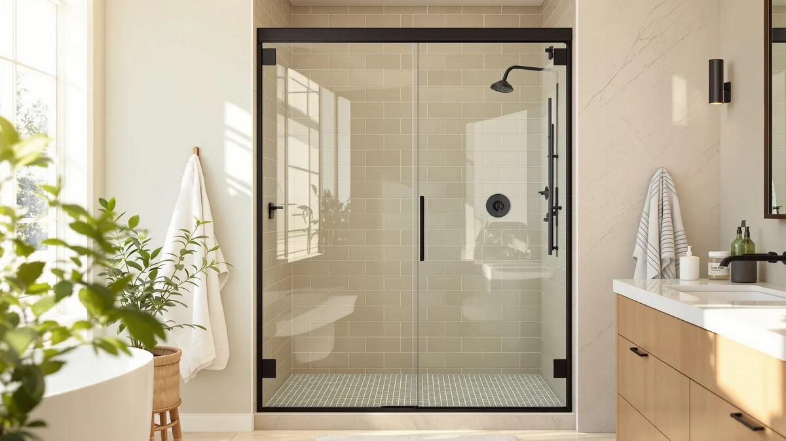

Best Shower Doors to Keep Clean: Complete Guide (2026)
Prices and picks verified as of September 2026. Independent, reader-supported reviews.


Things to Know Before You Buy
- Frameless beats framed for cleaning. No metal channel or track means fewer places for soap scum and mildew to build up.
- Coatings matter more than price. A factory coating like ClearShield or EnduroShield keeps water beading and rolling off instead of drying into spots.
- The bottom track is the weak point. Sliding doors collect hair and standing water there unless you flush it regularly.
- Squeegee daily, deep clean weekly. A quick squeegee pass after each shower prevents most of the buildup a weekly wipe-down would otherwise remove.
- Coatings wear out. Reapply a spray-on water-repellent treatment every few months once beading starts to fade.
The best shower doors to keep clean share three things: a frameless or semi-frameless design, tempered glass with a factory water-repellent coating, and hardware that gives grime nowhere to hide. A door that checks those boxes cuts your cleaning time roughly in half compared with a standard framed door.
Soap scum and hard water spots do not care how expensive your door is. A frameless slider with an uncoated pane can look worse after six months than a cheaper framed door wiped down daily. The materials and coating matter more than the price tag.
This guide compares the features that affect how clean your glass stays, the frame styles and coatings worth paying for, and the maintenance habits that keep buildup from taking hold.
What You Need to Know
Glass shower doors get dirty for two reasons: soap residue and hard water minerals. Soap scum forms when soap combines with the minerals already in your water, leaving a filmy layer on glass and metal. Hard water spots are separate: as water evaporates off the glass, it leaves behind calcium and magnesium deposits that etch into the surface over time.
The doors that fight this well share a factory-applied coating, often marketed as ClearShield, EnduroShield, or a similar hydrophobic treatment. These coatings fill the microscopic pores in the glass so water beads up and rolls off instead of drying into a film. A coated pane still needs regular wiping, but buildup comes off with a damp cloth instead of a scrub brush.
Frame design matters as much as the glass. A framed door's metal channel and bottom track hold standing water between showers, and that trapped moisture produces the mildew you see in the corners. A frameless door skips the channel almost entirely, which is a major reason frameless designs dominate the best shower doors to keep clean.
Sliding doors add one more variable: the bottom track. Even a coated, frameless slider still runs on a track that collects hair and standing water unless you flush it out regularly. Pivot and hinged doors skip the track altogether, which is part of why owners find them easier to keep spotless day to day.
Types and Categories
Shower doors fall into four categories, and each has a different cleaning profile.
Framed doors surround the glass with an aluminum perimeter and a track top and bottom. They are the cheapest option and seal water well, but the frame and track are the two spots where mold and soap scum build up fastest.
Semi-frameless doors keep a frame around the fixed panel but leave the swinging or sliding edge bare, a middle ground between cost and cleanup.
Frameless doors use thick tempered glass, usually 3/8 inch, held by minimal clips and hinges. With no perimeter track to trap water, they are the easiest style to keep clean, and that is why most lists of the best shower doors to keep clean lead with frameless picks. The tradeoff is a higher price and a harder installation.
Corner and neo-angle enclosures typically combine two glass panels, adding a second seam and sometimes a second track, so they usually need more cleaning attention than a straight frameless slider of the same size.
Beyond the door itself, look at pivot versus sliding hardware. A pivot or hinged door has no bottom track and swings on exposed hinges you can wipe in seconds. A sliding door needs floor clearance and a bottom track, but suits tubs and tight alcoves.
How to Choose
Start with your water. If you live somewhere with hard water, a factory glass coating stops being a nice extra and becomes close to mandatory. Look for terms like ClearShield, EnduroShield, or "easy-clean coating," and confirm whether it comes pre-applied or as a paid add-on.
Match the frame style to how much time you want to spend cleaning. A framed door with a coating can stay reasonably clear if you squeegee daily. If you want the lowest-maintenance option, frameless glass with no track is the safer long-term choice.
Check the glass thickness. Frameless doors need 3/8 inch glass to feel sturdy; anything thinner flexes and shows water spots more visibly. Framed and semi-frameless doors can use lighter 1/4 inch glass since the frame supports it.
Look at the hardware. Exposed screws, textured handles, and multi-piece hinges give soap scum more surface area to grip. A single smooth handle with flush hinges wipes down faster than ornate hardware.
Confirm the track design on sliding doors, since this is where most complaints about buildup come from. Some manufacturers now offer a removable track you can pull out and rinse in a sink rather than scrubbing in place.
Finally, weigh the shape of your opening. A single large frameless panel has less total seam length than a two-panel corner enclosure of the same size, and fewer seams means fewer places for mineral deposits to concentrate.
Common Mistakes to Avoid
Skipping the squeegee is the single biggest mistake. Water left to air-dry on glass evaporates and leaves mineral deposits behind, even on a coated door. A quick squeegee pass after each shower prevents most of the buildup people later try to scrub off.
Using the wrong cleaner is a close second. Abrasive powders and high-acid cleaners strip a hydrophobic coating in a handful of uses, and once it is gone, squeegeeing will not bring it back. Stick to a soft cloth and a glass-safe cleaner.
Buying on looks alone is another common trap. A frameless slider photographs well, but if you skip checking whether the track is removable or the glass is coated, you may end up with a door that looks great in the showroom and hazy within a year.
Ignoring the corners causes problems too. Soap scum concentrates where two panels meet or where glass meets a wall bracket, and those spots need direct attention since a general wipe-down often misses them.
People underestimate how much a bottom track adds to cleaning time. If low maintenance matters more than price, a hinged or pivot door with no track saves real time every month over even a well-reviewed sliding door.
Care and Maintenance
A daily squeegee pass is the foundation of keeping any shower door clean. Run it top to bottom right after your last shower of the day, while the glass is still wet, so you remove most of the water before it evaporates and leaves spots.
Once a week, wipe the glass with equal parts white vinegar and water, then rinse and dry with a microfiber cloth. Vinegar dissolves early hard water buildup without the abrasiveness of a scouring pad and will not damage a factory coating.
If your door has a bottom track, flush it with warm water and a soft brush every week or two. Hair and standing water collect there fast, and a grimy track is a common reason a sliding door starts to smell musty.
For coated glass, reapply a hydrophobic spray treatment every few months once water stops beading and starts sheeting flat across the surface. A dedicated water-repellent spray restores the beading effect and buys more time between deep cleans.
Check hinges and seals twice a year. Loose hinges let a door sag against its seal, and a worn seal lets water escape onto the floor. Both are quick fixes when caught early.
Our Top Picks
The three picks below cover a frameless door, a comparable alternative, and a cleaning product worth pairing with either one.

Editor’s Pick
ENSO SENKA 56-60" W x
A frameless sliding door with tempered glass and minimal hardware, so there is little metal or trim for soap scum to grip. Owners report the track handles a 56 to 60 inch opening smoothly.
$329.00
Check Price on Amazon
Best Value
56-60" W x 76" H
A comparable frameless slider at nearly the same price as our top pick, with the same 56 to 60 inch range and tempered glass. Worth comparing against the ENSO SENKA on hardware finish before you decide.
$324.01
Check Price on Amazon
Premium Choice
Rain-X 630544 X-Treme Clean Shower
A water-repellent spray treatment for glass shower doors, meant to make water bead up and roll off instead of drying into spots. Reviewers consistently note it extends the time between deep cleans.
$16.99
Check Price on AmazonFrequently Asked Questions
What is the easiest shower door to keep clean?
Frameless glass with a factory water-repellent coating is easiest to keep clean, since there is no metal frame or track collecting grime. Pair the door with a daily squeegee habit.
Do glass coatings on shower doors actually work?
Yes. A hydrophobic coating fills the microscopic pores in glass so water beads up and rolls off rather than drying into a film. It wears down over years, and reapplying a spray-on treatment every few months restores the beading effect.
How often should I clean a shower door to prevent buildup?
Squeegee the glass after every shower, wipe it with a vinegar and water solution once a week, and flush any bottom track every one to two weeks.
Are frameless shower doors worth the extra cost for easier cleaning?
For most bathrooms, yes, if low maintenance matters to you. A frameless door removes the track and metal channel that collect the most grime on a framed model. A semi-frameless door with a coated pane gets you most of the same benefit for less money.
Can I add a water-repellent coating to an existing shower door?
Yes. Spray-on treatments like Rain-X's shower-specific formula apply a hydrophobic layer to glass that lacks a factory coating. It will not perform quite as well as one baked on during manufacturing, but it noticeably reduces spotting on an older door.
Verdict
The best shower doors to keep clean come down to three choices done right: minimal frame, coated tempered glass, and a track you can actually reach. Skip the ornate hardware and multi-panel corner setups if low maintenance is the priority, and put your money into the glass treatment instead of the trim. Among the options compared here, the ENSO SENKA frameless slider checks every box, with no metal channel to trap water and a smooth track sized for a standard 56 to 60 inch opening. The PeacefulHues slider is worth comparing directly at a similar price. Whichever door you already own, a water-repellent spray like Rain-X's shower treatment is the cheapest way to buy yourself extra time between deep cleans. Pair the right door with a daily squeegee habit, and maintenance drops to minutes a week instead of hours.